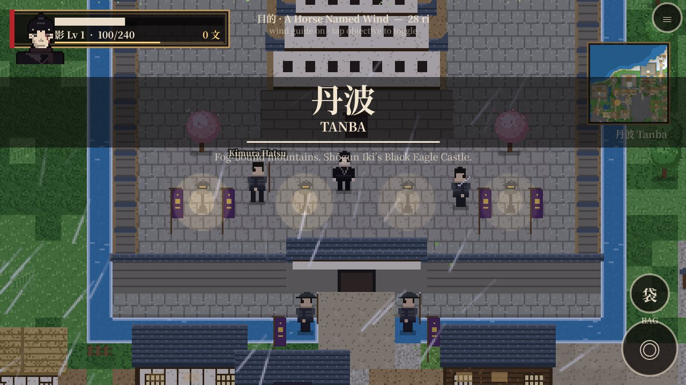
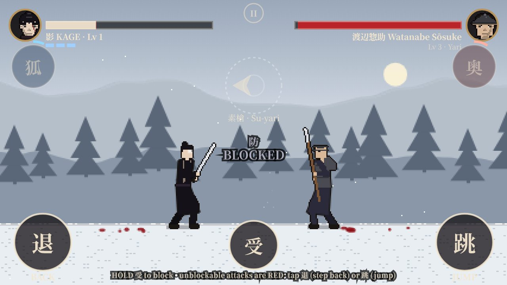
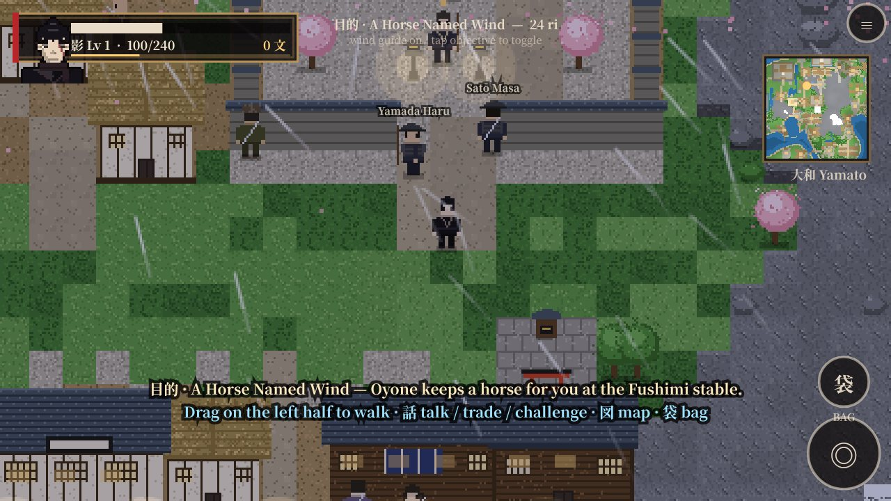
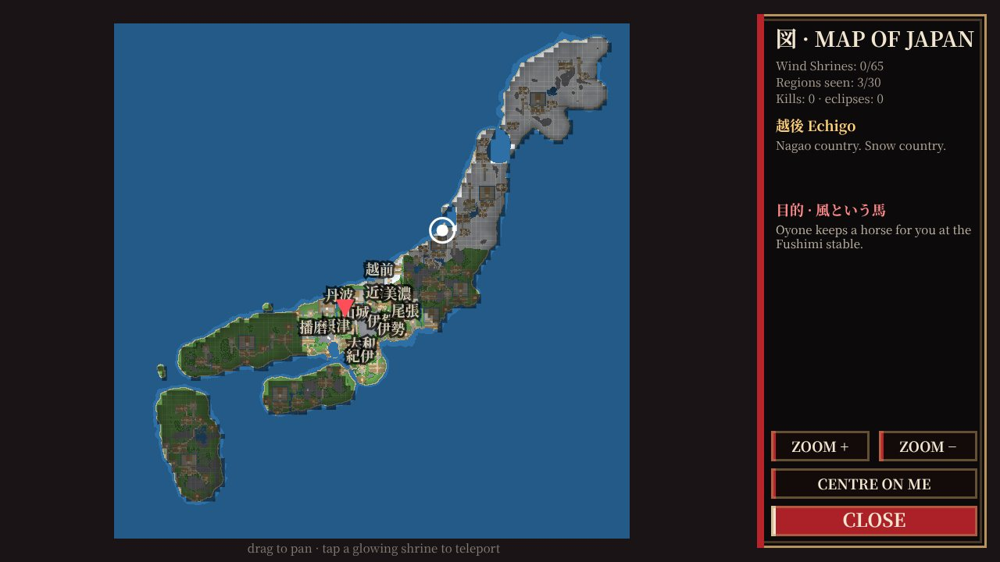
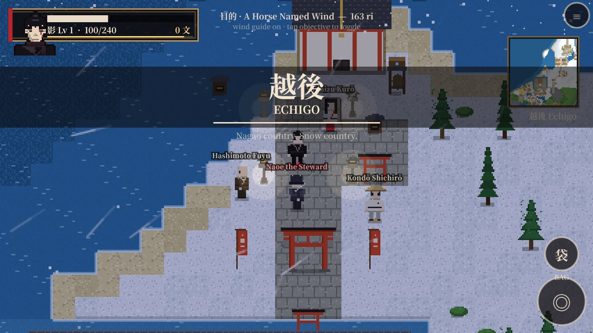
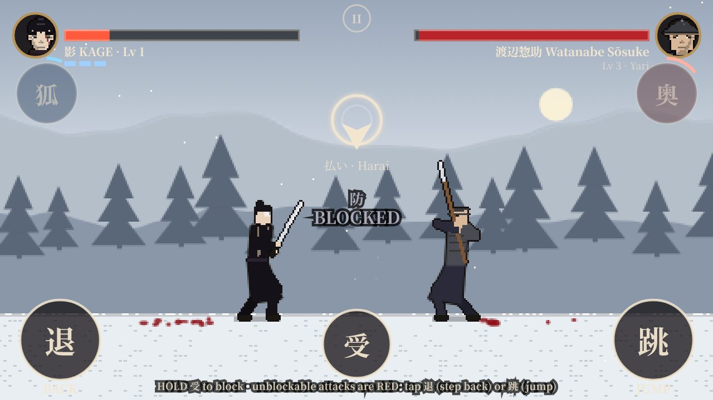
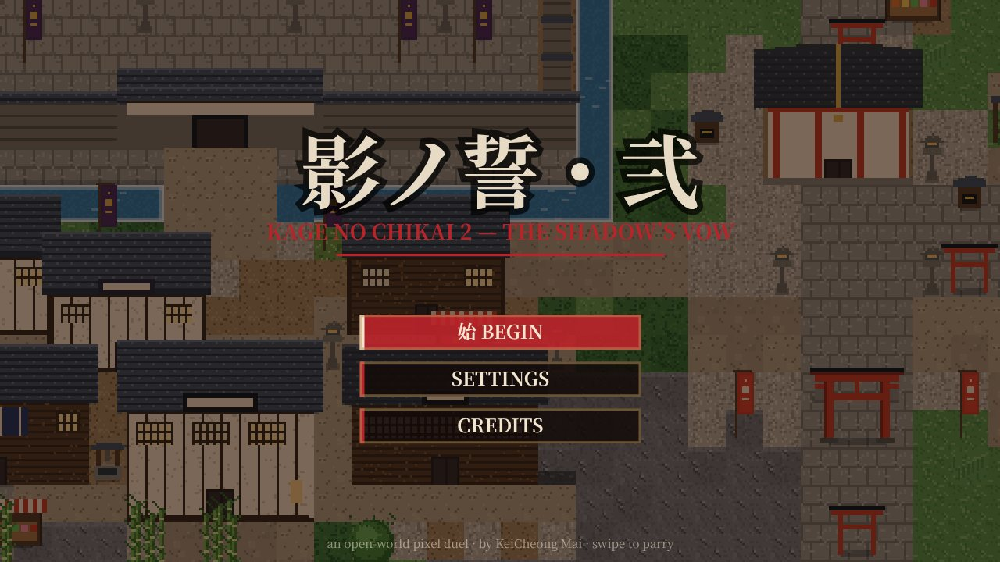

Walk all of Japan
A procedurally generated archipelago of 30 provinces, from Kyūshū to Ezo, with 106 castles, forts, ports, temples, shrines, villages and hideouts linked by roads.
Walk all of Japan. Draw your blade on any road. Keep the vow.
Free · Play on PC (keyboard) or mobile in your browser, no install · APK for Android 7.0+ · v1.3
Three ways in, same game. The web build is the full v1.3 game running in your browser, with the soundtrack streamed, your progress saved locally.
Full keyboard support. The controls sheet opens when the game starts, and ? brings it back any time.
The original touch controls, as on the Android build. Turn your phone to landscape.
The native Android build with amplitude-controlled haptics for parries, hits and executions, plus offline play.
I had made two very different games. Bright Spirit is about the joy of wandering: a big world, roads to follow and secrets off them. Kage no Chikai is about one moment: two swordsmen, a glowing arrow and a parry that has to be perfect. Players asked me which kind of game I would make next. My answer was both.
A living map, towns and roads, day and night, weather, and the pull of the next horizon.
Swipe along the enemy's telegraphed arrow to parry, block, step back or leap over red unblockables.
A pixel-art Japan you can travel end to end, where any road, village or castle gate can become a duel.
It is my second game, built on everything the first ones taught me, and it is the one I have had the most fun making.
You are Kage, the body double of Lord Satō of Kyō. You have lived your whole life as another man's shadow. Now you are given a deal: kill the Eight Eagles and Shōgun Iki, and your family goes free.
Part One · 影の誓い is the vow. Part Two · 天下統一 opens up a secret map, sea shrines and eight clans, and asks whether one shadow can unite Japan.

A procedurally generated archipelago of 30 provinces, from Kyūshū to Ezo, with 106 castles, forts, ports, temples, shrines, villages and hideouts linked by roads.
40 quest steps with cutscenes, a guiding wind that points to your next objective, and NPCs you can talk to, trade with or challenge.
The signature parry from Kage no Chikai: swipe along the telegraphed arrow, hold to block, and step back or jump when an attack glows red.
Each named boss, from Hanzō to Date to Shōgun Iki, has his own theme in a soundtrack of 57 tracks synthesised entirely in code.
Five rarities from common to mythic, 13 weapon kinds from katana to kusarigama, 14 helms, 14 armours and 10 charms. Gear changes Kage's sprite. Beat a merchant, the deadliest duellists of all, and take their best stock.
A horse of your own, day and night, rain and snow, region music that changes as you ride, and a full map of Japan with travel waypoints.
A sheathed blade where a perfect parry becomes a draw-cut. Its finishers are the twelve ZNKR Seitei Iai forms, performed in order with their real names, each ending in chiburi and an accurate four-beat nōtō.
Every victory ends in a weapon-specific pixel execution, three per weapon kind. Bosses get a cinematic: the disarm, the last breath, the cut, then 討取 SLAIN.
Four difficulties up to Hell, where the timing ring disappears. Kill a story character out of order and the story changes: early endings, a different betrayal, a horse you must buy. The dead stay dead until the next eclipse.






No asset store, no sample packs, no engine. Every pixel, tree, road, character, sound and note in Kage no Chikai 2 is generated or written in plain JavaScript and Python. These are the walls I hit, and how I got past each one.
A 640×640-tile archipelago shaped like Japan, with Honshū, Shikoku, Kyūshū, Hokkaidō, Sado and Awaji, rivers, Lake Biwa, mountains, snow country and volcanic Satsuma. It also had to be a fair game map, so 30 provinces each get a capital, a shrine and villages, and every site is joined by roads and bridges that make sense to walk.
A world that size can't be drawn every frame. The renderer caches the map in chunks and splits the screen into a pixel-art canvas and a crisp overlay for text and UI. An automatic Lite mode steps in on slow devices and adapts the effects, so the game stays playable everywhere.
Exploration wants a joystick and duels want swipes, and both run on the same touchscreen. The input system changes modes with the scene: a floating stick and buttons in the world, eight-direction swipe reading in a duel. The parry from the first game survives untouched. For this web release I mapped every touch control to the keyboard, so the arrow keys now do the swipe.
I hold 1st Dan in iaidō, so I wanted the iaitō to honour the real art, not just look flashy. I scripted the twelve Seitei Iai kata as pixel choreography: seated forms that start from seiza, shadow opponents for the multi-cut forms, and a nōtō in four beats with the left hand at the koiguchi and the blade drawn across until the kissaki meets the mouth. There are 48 executions in total.
Anyone can be challenged, including story characters, so the plot has to survive the player. 40 quest steps track who is alive. Kill Satō early and you get the early ending. Slay the Shōgun before the Eagles and the story jumps ahead. An eclipse brings back every non-boss NPC, so the world never empties.
I didn't want licensed music, so I wrote a composer instead. tools/compose.py synthesises shakuhachi, koto, shamisen, biwa, taiko, temple bells and strings from scratch and renders 57 tracks, one for each of the 34 bosses. Getting them to stream inside the Android WebView meant rebuilding the app shell to serve assets with Content-Length and HTTP Range support.
Play the full game right now in your browser on PC or mobile, or take the full game with you on Android. Both are free.